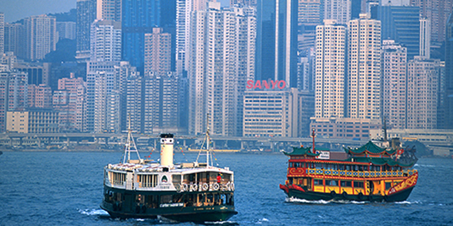
.
Leaving China, we flew to Hong Kong, then still a 'colony' of the UK (it was returned to China in 1997 when Chris Patten, the 28th and last Governor of Hong Kong handed it back following a detailed political process).
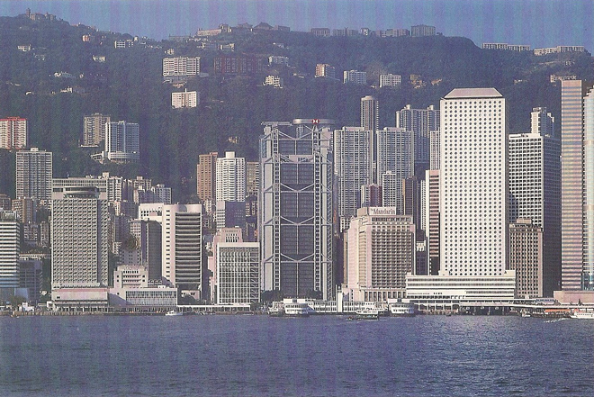
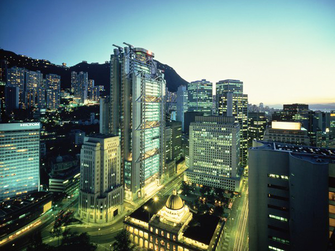
The HSBC (Hong Kong and Shanghai Banking Corporation) HQ building is located at No. 1 Queen's Road Central on Hong Kong Island. It was also home to HSBC Holdings plc's offices until it moved to London to meet the requirements of the UK regulatory authorities after the acquisition of Midland Bank in 1992. It was designed by British architect Norman Foster, and was then the most expensive building in the world, based on usable floor area.
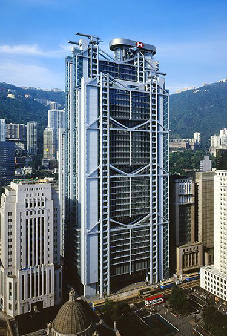
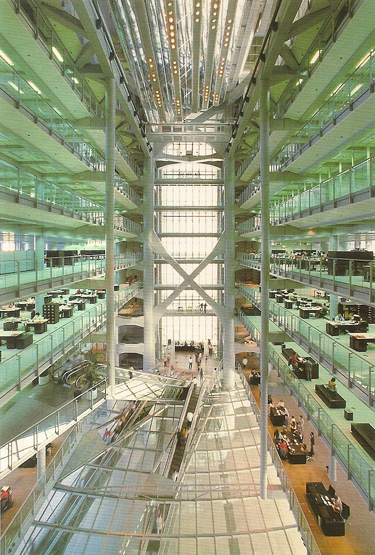
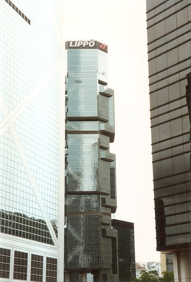
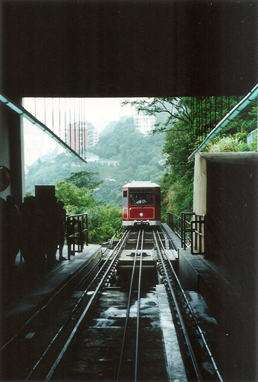
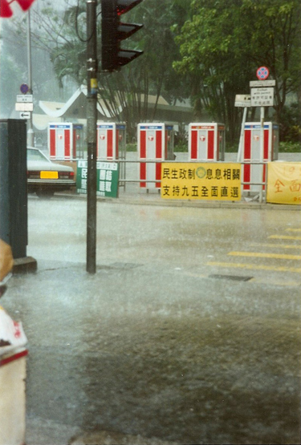
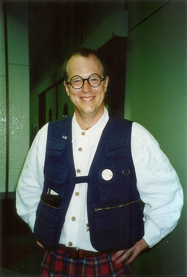
Taking the the ferry between Hong Kong Island and Kowloon.
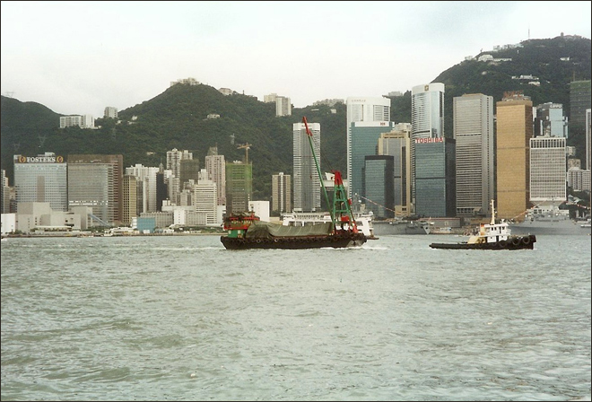
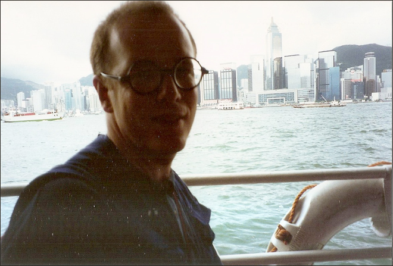
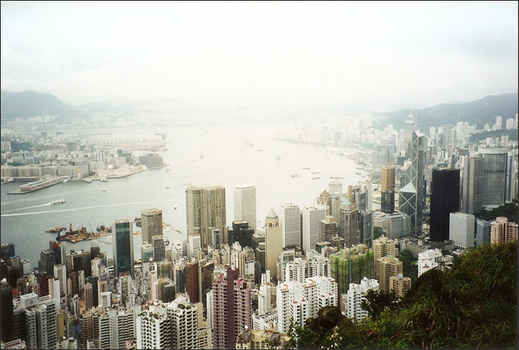
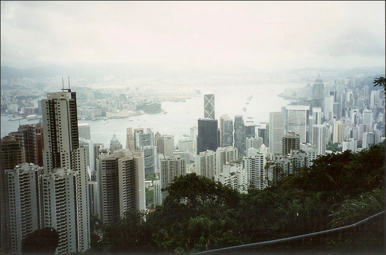
And what was the first thing we did when we got back to London? We went out and bought an 'Aromatic Crispy Duck' supper combo to see if we could recreate the experience we had in China. It missed by a mile ...
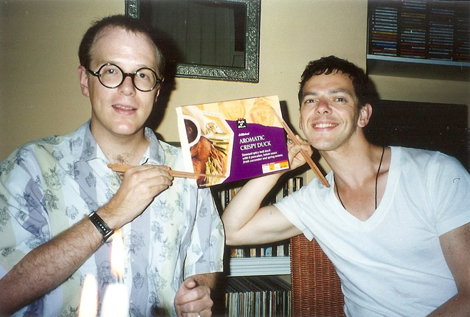